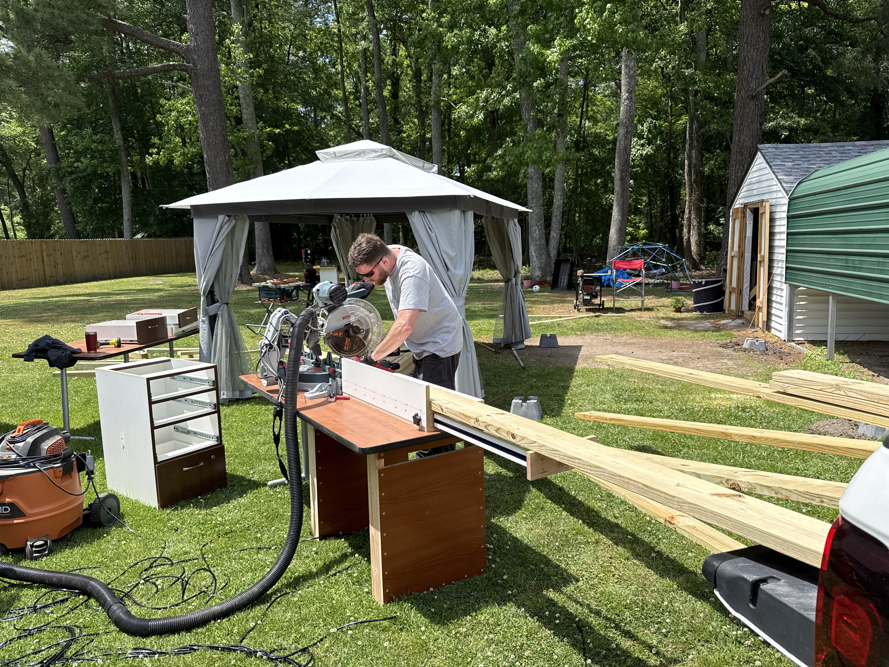
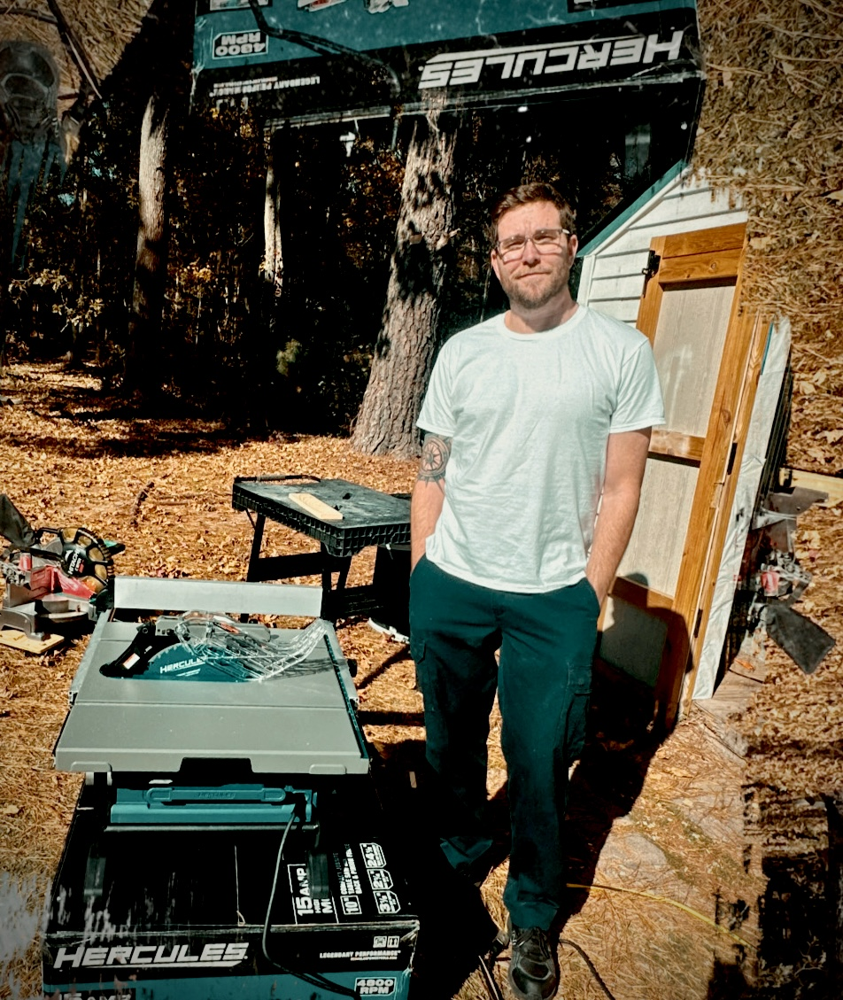
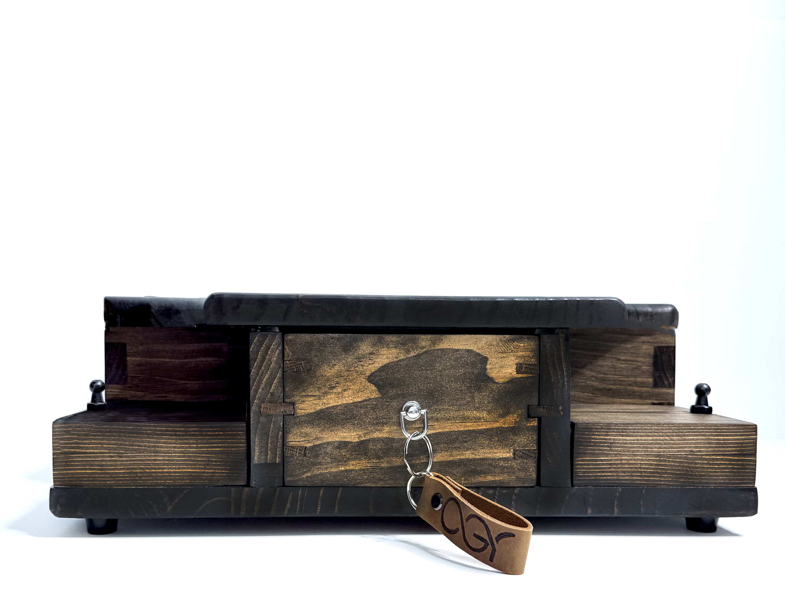

Creativity, Craftsmanship, and Continuous Learning
Woodworking has become PJ's favorite hobby because it combines creativity, problem-solving, and craftsmanship. Each project gives him the opportunity to learn something new while creating something meaningful with his own hands.
"Woodworking gives me peace and quiet. It challenges me and shows me what I can do."
What began as an interest in watchmaking eventually grew into a passion for woodworking. The hobby allows PJ to disconnect from daily stress, focus on the process, and enjoy the satisfaction of seeing a completed project come to life.



Beyond woodworking, PJ enjoys watches, sports, pop culture, and learning about special effects makeup used in horror films. These interests reflect his curiosity and appreciation for both creativity and technical skill.
He enjoys exploring how things work, whether that means understanding the mechanics of a watch, following favorite sports teams, or learning the techniques used behind the scenes in film production.
Visit the family business website: